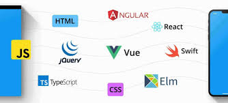

FRONTEND

Definicion:
Un sistema de front-end es parte de un sistema de información al que el usuario accede directamente e interactua para recibir o utilizar las capacidades de back-end del sistema anfitrión.
Permite a los usuarios acceder y solicitar las prestaciones y servicios del sistema de información subyacente.
El sistema de front-end puede ser una aplicación de software o hardware o su combinación
Fundamentos de frontend:
Por lo general, el desarrollador front-end trabaja con un diseñador gráfico (diseñador web) que proporciona el diseño gráfico.
A menudo, los desarrolladores front-end tienen la oportunidad de trabajar con un diseñador de UX que propone y crea un prototipo de interacciones que tendrán lugar en los sitios web.
El papel de los desarrolladores front-end es ponerlo todo junto.
Se dice popularmente que un desarrollador front-end tiene la tarea de cortar un diseño gráfico, dividir el diseño en partes más pequeñas y codificar (HTML y CSS) en sitios web que los usuarios finalmente usan.